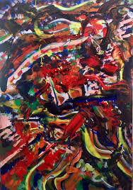

Abstract Art
Abstract art is art that does not attempt to represent an accurate depiction of a visual reality but instead achieves its effect through the use of shapes, colors, forms, and gestural marks. Marks exist independently, but they are linked by an energy, movement, or feeling. Abstract art has been around for over a century. It can be whatever you want. There are rules and there are no rules. People can use abstract to explore things they see in their heads rather than their eyes. Abstract art allows you to be creative and express yourself.